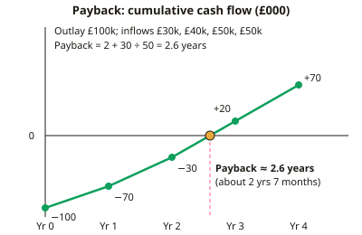

A-level Business Year 13 · Topic 5
Strategic decision-making techniques
This topic covers the quantitative tools managers use to make big strategic decisions.
We appraise investments with payback, average rate of return and net present value, and weigh options with decision trees.
We also plan projects with critical path analysis, forecast sales, and compare data-driven and intuitive decision making.
- 6 subtopics
- 328 questions
- Free: 5.1 notes and 10 questions
In this topic
- 5.1Investment appraisal: payback and average rate of returnFree below · 62 questions
- 5.2Investment appraisal: net present value and discountingOpen in Full Marks · 57 questions
- 5.3Decision trees and expected valuesOpen in Full Marks · 28 questions
- 5.4Critical path analysisOpen in Full Marks · 33 questions
- 5.5Sales forecasting: time-series analysis, moving averages and extrapolationOpen in Full Marks · 71 questions
- 5.6Data-driven versus intuitive strategic decision-makingOpen in Full Marks · 77 questions
5.1 · Free notes
Investment appraisal: payback and average rate of return

Key points
- Investment appraisal judges whether a capital project (new machinery, premises, product launch) is worth the initial investment, using forecast cash flows. Exams expect calculation plus evaluation.
- Payback period is the time taken for cumulative net cash inflows to recover the initial outlay. It is a measure of liquidity and risk, quoted in years and months.
- Payback method: full years before recovery + (outstanding amount ÷ cash flow in the payback year) × 12 months. For example, £100k outlay with inflows of £30k, £40k and £50k gives 2 + 30/50 = 2.6 years (about 2 years 7 months).
- Average rate of return (ARR) = (average annual profit ÷ initial investment) × 100. Average annual profit = (total net returns − initial investment) ÷ number of years.
- Decision rules: accept if payback is within the firm's target (e.g. 3 years) or shorter than alternatives. Accept if ARR exceeds the target return, the cost of borrowing or the ARR of rival projects.
- Strengths of payback: simple and quick, and focused on cash and risk. It suits firms with limited finance, uncertain markets or fast-obsolescing technology.
- Weaknesses of payback: it ignores cash flows after the payback date, ignores the time value of money, and does not measure overall profitability.
- ARR strengths: it uses all years' data and gives a percentage that can be compared with interest rates or targets. Weaknesses: it ignores the timing of returns and the time value of money, and averaging hides uneven profit patterns.
- Both methods depend on forecasts, which may be unreliable (sales estimates, cost changes, competitor reactions). Sensitivity analysis or scenario testing can show how robust the result is.
- Evaluate by weighing qualitative factors (strategic fit, ethics, reputation, risk, employees), the firm's size and access to finance, and by using the results alongside NPV. Do not decide on one number; justify a judgement.
In more detail
- Worked comparison: Project X costs £60k and returns £25k a year for 4 years → payback 2.4 years, ARR 16.7%. Project Y costs £60k and returns £10k, £15k, £35k and £50k → payback 3 years, ARR 20.8%.
- Which to choose? A firm short of cash, or facing fast-changing technology, might prefer X's quicker payback, while one seeking the highest profit might prefer Y.
- Target rates: if the firm can borrow at 7%, both ARRs beat that, but it may set a higher target, such as 15%, to allow for risk.
- Back-loaded risk: Project Y relies on large inflows in years 3 and 4, which are the hardest to forecast accurately.
Practice
Investment appraisal: payback and average rate of return: 10 questions
Pick an answer to check it, or open the answer for the explanation.
1. A project costs £80,000 and brings net cash inflows of £20,000, £30,000, £40,000 and £40,000 in Years 1–4. What is the payback period?
- 2 years 9 months
- 2.5 years
- 3 years 2 months
- 2 years 3 months
Show answer
A: 2 years 9 months. After Year 2 £50,000 is recovered, leaving £30,000. Year 3 gives £40,000, so 30/40 = 0.75 of a year = 9 months. Payback is 2 years 9 months.
2. A £50,000 investment gives total net cash inflows of £100,000 over 4 years. What is the average rate of return (ARR)?
- 50%
- 12.5%
- 40%
- 25%
Show answer
D: 25%. Net return = £100,000 − £50,000 = £50,000; ÷ 4 = £12,500 a year. ARR = 12,500 ÷ 50,000 × 100 = 25%.
3. Which is a key limitation of the payback method?
- It ignores cash flows after the payback date
- It uses profit rather than cash flow
- It cannot be expressed in units of time
- It requires a discount rate to be chosen
Show answer
A: It ignores cash flows after the payback date. Payback stops counting once the outlay is recovered, so later cash flows, which may be large, are ignored. It also ignores the time value of money.
4. Which statement about ARR is correct?
- It measures how quickly the outlay is recovered
- It uses every year's profit and gives a % comparable with interest
- It ignores profit earned after year 3
- It discounts later profits to present value
Show answer
B: It uses every year's profit and gives a % comparable with interest. ARR averages profit over the whole project life and gives a percentage, so it can be compared with interest rates or targets. It does not discount or measure speed.
5. Why might a tech firm facing rapid obsolescence prefer payback as its main appraisal method?
- It stresses fast cash recovery, limiting the risk of obsolescence
- It measures total lifetime profit most accurately
- It shows the percentage return on capital
- It adjusts for the time value of money
Show answer
A: It stresses fast cash recovery, limiting the risk of obsolescence. Payback focuses on how soon cash is recovered, which matters when products or technology may quickly become outdated. It does not measure lifetime profit or discount.
6. A £150,000 machine generates steady net cash inflows of £60,000 a year. What is the payback period?
- 2 years 4 months
- 2 years 6 months
- 2 years 2 months
- 3 years 3 months
Show answer
B: 2 years 6 months. £150,000 ÷ £60,000 = 2.5 years, which is 2 years 6 months.
7. Project A: payback 2 years, ARR 15%. Project B: payback 3 years, ARR 22%. A cash-short firm chooses mainly on liquidity. Which is it likely to pick?
- A, as it recovers its outlay sooner
- B, as it has the higher ARR
- B, as its payback is longer
- Neither, as payback and ARR conflict
Show answer
A: A, as it recovers its outlay sooner. A cash-short firm values quick recovery of cash, so A's shorter payback is the main criterion. B's higher ARR is a profitability measure, which is less relevant here.
8. Which formula correctly gives ARR?
- (Average annual profit ÷ initial investment) × 100
- (Initial investment ÷ average annual profit) × 100
- (Average annual profit ÷ total inflows) × 100
- (Total cash inflows ÷ initial investment) × 100
Show answer
A: (Average annual profit ÷ initial investment) × 100. ARR is average annual profit divided by the initial investment, multiplied by 100 to give a percentage.
9. A £200,000 project over 5 years produces total net cash inflows of £340,000. What is the ARR?
- 14%
- 34%
- 70%
- 28%
Show answer
A: 14%. Total profit = 340,000 − 200,000 = £140,000; ÷ 5 = £28,000 a year. 28,000 ÷ 200,000 × 100 = 14%.
10. Which is a qualitative factor a manager should weigh alongside payback?
- The calculated ARR of 18%
- The initial cost of £2m
- The forecast net cash flow in Year 2
- The likely impact on the firm's reputation and ethics
Show answer
D: The likely impact on the firm's reputation and ethics. Qualitative factors cannot easily be quantified, such as reputation, ethics, strategic fit and employee morale. The other options are numerical data.
Keep going in Full Marks
Full Marks has 62 questions on Investment appraisal: payback and average rate of return (52 more than here), set out in practice levels. You also get notes and 3D models for all 6 subtopics of Strategic decision-making techniques, plus games, timed exams and past papers.
On your exam board
- AQATopic 1.3: Analysing the strategic position: investment appraisal and decision making
- OCRTopic 1.3: Decision-making techniques
- EdexcelTopic 3.3: Decision-making techniques, Topic 3.4: Influences on business decisions
- CambridgeTopic 8: Marketing, Topic 9: Operations management, Topic 10: Finance and accounting, Topic 11: Strategic management